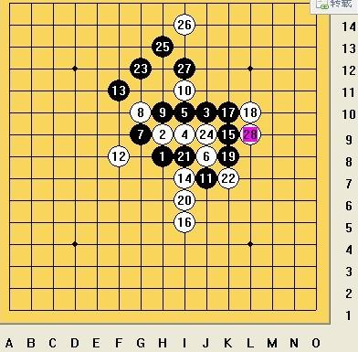
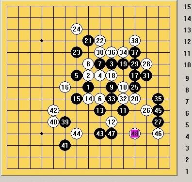

两道黑先vcf（通过连续冲四，而取得胜利的一种方法），12月21日郭峰给出的，传说第二题来自于高飞的空间。
大家都知道计算力很重要，但是没有哪种计算方式是又快又准确的。那怎样提高计算能力？做题，做完了。我发现第一题如果去寻找所有的二就能找到vcf的最后一步。而第二题，一开始有两个分支，排除一个，另一个马上就出了。
我们都有自己的计算力，都拥有自己的一片天，无限广大，无所不包。
但做完题目发现，其实地上也是有路的，阡陌交通，纵横八达。
天是圆的，地是方的。 （转自咒灵博客）
图的顺序反了吧
［ 茗弈宽容 于 2009-12-30 12:49:50 时花20金币送鲜花一朵］